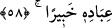

bir pay istemiyorum. Ancak Allah için infak etmek isteyen kimse bunu yapsın. Ben onu
bundan da menetmiyorum.
et-Te’vîlâtû’n-Necmiyye’de der ki: Ancak Bana vesile edinilen hizmet, infak veya
tâzim ile “Rabbine” yaklaşmayı ve O’nun katında yer edinmeyi “dileyen kimseler
(olmanız) hâriç…” İşte bunun için meşâyıh şöyle demişlerdir: “Mürid ibâdetle cennete
ulaşır, şeyhlere tâzim ve hürmet (iclâl) ile Allah Teâlâ’ya vasıl olur.”
el-Fütûhâtü’l-Mekkiyye’de der ki: “Bizim mezhebimize göre vâiz insanlara yaptığı
vaazdan dolayı ücret alabilir. Her ne kadar alınmaması efdal ise de bu, kişinin
yediklerinin en helâl olanlarındandır.” Bu sözün îzâhı şöyledir: Allah’a dâvet makamı,
ücret almayı gerektirir. Çünkü Allaha dâvet eden her peygamber mutlaka “Benim
ücretim Allah’a âiddir.” (bk. Yûnus, 10/72; Hûd, 11/29, 51; eş-Şuarâ, 26/109…)
demiş ve dâvet karşılığı ücreti ispat etmiştir. Ancak bu ücreti mahlûktan değil,
Allah’tan almayı tercih etmiştir.
Müteahhirûn âlimler ezan okumak, kâmet getirmek, va‘z etmek, ders okutmak, hac,
gaza, Kuran ve fıkıh öğretmek ve okumak işlerine bugün rağbet azaldığı için ücret
almanın sahih olduğuna dâir fetva vermişlerdir. Ancak ücret almak, muallimin, imamın
ve müftünün tek kişi olması gibi zorunlu bir durumda olursa icmâ ile sahih olmaz.
Nitekim el-Kirmânî’de ve diğer kaynaklarda böyle geçmektedir. Yine bir beldede
cenaze yıkayan bir kişi varsa ölü yıkamak ona düşer. Ücret taleb etmesi câiz olmaz.
58. Ölümsüz ve dâimâ diri olan Allah’a güvenip dayan. O’nu hamd ile tesbih et.
Kullarının günahlarını O’nun bilmesi yeter.
Onların kötülüklerinden korunmak ve ücretlerinden müstağnî olmak konusunda
“Ölümsüz ve dâimâ diri olan Allah’a güvenip dayan.” Kendisine güvenilip tevekkül
edilmeye lâyık olan, bir özellikleri de ölüm olan canlılar değil Allah’tır. Çünkü onlar
ölünce onlara güvenenler zâyî olur.
Tevekkülün aslı, kulun bütün hâdiselerin Allah’tan sâdır olduğunu, O’ndan başkasının
yaratma gücü olmadığını bilmesi ve muhtaç olduğu her hususta işini Allah’a havale
etmesidir. Tevekkül’ün bu kadarı farzdır ve îmânın şartlarındandır. Allah Teâlâ: “Eğer
müminler iseniz ancak Allah’a tevekkül edin.” (el-Mâide, 5/23) buyurmuştur. Kalbin
sukûneti, tereddüd ve ızdıraptan kurtulup huzûra kavuşması gibi daha fazlası mânevî
hallerdir ve kemâl üzere tevekküle dâirdir. et-Te’vîlâtü’n-Necmiyye’de böyle
geçmektedir.
Vâsıtî der ki: “Allah’tan başka bir sebeple Allah’a tevekkül eden, Allah’a tevekkül
etmemiştir.”